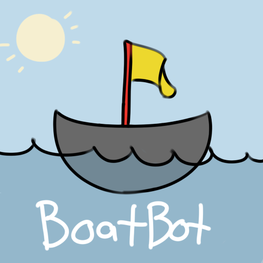

 BoatBot Documentation
osu! stats on discord
We support these following servers: osu.ppy.sh
-
expand_moreBot Info
-
expand_moreGeneral Commands
<>indicate required parameters and[]indicate optional parameters- "ign" means osu! username
- what does
[ign resolvable]mean?[]: nothing needs to be specified if you want to pull up your own informationign: the username (whatever it is)$shortcut: any $shortcut set for a user usingLsetshortcut@mention: mention any other discord user^: the summoner whose information was most recently requested
- what does
<ign list resolvable>mean?ign1,ign2,ign3...ign10: comma separated list of usernamesign1,$shortcut2,$shortcut3,...ign10: any mix of igns and $shortcuts, comma separated- lobby/champ select chat: copy and paste the chat from your premade lobby or champion select
- post game chat: copy and paste the chat from after the game ends
- command use is not case sensitive.
COMMANDS v1.7.0
ACTION EXAMPLE <region> [ign resolvable] <op.gg link>
Shows summoner's stats Lhelp
Displays an information card on how to use BoatBot Lhelp
Linvite
Provides information on how to add BoatBot to a different server Linvite
matchhistory <region> [ign resolvable] mh <region> [ign resolvable]
Displays basic information about the 5 most recent games played matchhistory<number> <region> [ign resolvable] mh<number> <region> [ign resolvable]
Displays detailed information about one of your most recently played games. rankedmatchhistory <region> [ign resolvable] rmh <region> [ign resolvable]
Same as " matchhistory" or "mh" but only shows ranked games for all game-modes.rmh na routurorankedmatchhistory<number> [ign resolvable] rmh<number> [ign resolvable]
Same as the detailed match history but for ranked games only rmh1 na routurolivegame <region> [ign resolvable] lg <region> [ign resolvable] currentgame <region> [ign resolvable] cg <region> [ign resolvable] livematch <region> [ign resolvable] lm <region> [ign resolvable] currentmatch <region> [ign resolvable] cm <region> [ign resolvable]
Shows information about a game currently being played championmastery <region> [ign resolvable] mastery <region> [ign resolvable]
Gets the top 90 mastery champions for a summoner. multi <region> <ign list resolvable> m <region> <ign list resolvable>
Shows information about multiple users. If the contents of a post-game or pre-game lobby are posted, statistics will be retrieved for those present in the game/lobby. fairteamgenerator <region> <ign list resolvable> teamgenerator <region> <ign list resolvable> ftg <region> <ign list resolvable> tg <region> <ign list resolvable>
Generates the fairest teams possible (for a custom game) for a list of usernames based on experience, skill, or random. ftgd <region> <ign list resolvable> tgd <region> <ign list resolvable>
Same as above but with added statistics. mmr <region> <ign resolvable>
Delivers a joke based on random mmr. Lcomplain <text>
Tell us why BoatBot isn't working out for you. Lcomplain BoatBot is too slowLsuggest <text>
Give us a suggestion. Lsuggest make this a new commandLpraise <text>
Give us a pat on the back. Lpraise BoatBot is great!Lask <text> Lquestion <text>
Send us your questions. Lask when's the next update coming?Lping [text]
Checks BoatBot response time. If text follows Lping, then the response will be a repeat of the text.LpingLabout Lcredits Lacknowledgements Lcontributors Lcontributions
Shows list of people who have contributed to the BoatBot project Lcredits -
expand_moreUsername Tools: Links and Shortcuts
<>indicate required parameters and[]indicate optional parameters- "ign" means osu! username
- command use is not case sensitive.
COMMANDS v1.7.0
ACTION EXAMPLE Llink <region> <ign>
If your LoL ign is different from your discord username, you can set your LoL ign using this command, and BoatBot will remember it. Llink na routuro
Lgetlink Lgl
Tells you what LoL username you currently have registered with BoatBot Lgl
Lunlink Lremovelink
BoatBot forgets your preferred username. Lunlink
Lshortcuts Lshortcut
Displays a list of nicknames you've set for friends with hard to spell names. All shortcuts begin with an "$". Lshortcuts
Lsetshortcuts $<nickname> <ign> Lsetshortcut $<nickname> <ign> Lss $<nickname> <ign> Lcreateshortcut $<nickname> <ign> Laddshortcut $<nickname> <ign>
Add a nickname to your preferences. Lss $jon Scùffed
Lremoveshortcut $<nickname> Lrs $<nickname> Ldeleteshortcut $<nickname> Lds $<nickname>
Remove a nickname from your preferences. Lrs $jon
Lremoveallshortcuts
Remove all nicknames from your preferences. Lremoveallshortcuts
-
expand_moreServer Settings
<>indicate required parameters and[]indicate optional parameters- "ign" means osu! username
- command use is not case sensitive. Permissions:
- Server Owner
- Server Admin:
- Kick user
- Manage messages
- Ban user
- Manage roles
- Manage channels
- Server Moderator:
- Kick user
- Manage messages
- Bot Commander: Has a role named "bot commander"
COMMANDS v1.7.0
ACTION DEFAULT EXAMPLE BoatBotprefix [new prefix]
Changes the prefix for BoatBot. If none is specified, BoatBot will operate without using prefixes. L
BoatBotprefix !Lsetting auto-opgg <on/off>
Toggles automatic summoner information when an op.gg link is sent. on lsetting auto-opgg offLsetting force-prefix <on/off>
Force using a prefix for LoL statistics command that do not require one. ( mastery<->Lmastery)off lsetting force-prefix onLsetting release-notifications <on/off>
Show BoatBot release notes in your server. on lsetting release-notifications offBoatBot settings reset all
Reset all server settings to default. BoatBot settings reset all -
expand_moreGlobal Management Commands
<>indicate required parameters and[]indicate optional parameters
"ign" means osu! username
command use is not case sensitive.COMMANDS v1.7.0
ACTION OWNER PERMISSIONS REQUIRED Leval <javascript code>
Evaluates javascript and sends the result as a reply. Yes iapi eval <javascript code>
Evaluates javascript on the internal API process and sends the result as a reply. Yes Lnotify <message>
Sends a message in each server BoatBot is connected to. Yes Lreleasenotify <message>
Sends a message about a new BoatBot release to all servers. This type of mass notification can be disabled on a per-server basis. Yes Llink <region> <ign> <@user>
Sets a link for a different user. Yes Lunlink <@user> Lremovelink <@user>
Removes a link for a different user. Yes Lgetlink <@user> Lgl <@user>
Retrieves a link for a different user. Yes Lbanuser <user id> <duration> <reason>
Bans a user from using BoatBot. Set duration as 0for a permaban. Accepted time modifiers are "H" hours and "D" days.Yes Lbanserver <server id> <reason>
Bans a server from using BoatBot. Set duration as 0for a permaban. Accepted time modifiers are "H" hours and "D" days. If a server is issued a permaban, BoatBot MAY leave the server on its own.Yes Lwarnuser <user id> <reason>
Warns a user to not abuse BoatBot. Yes Lwarnserver <server id> <reason>
Warns a server to not abuse BoatBot. Yes Lnoteuser <user id> <reason>
Quietly makes an internal note about a user. Yes Lnoteserver <server id> <reason>
Quietly makes an internal note about a server. Yes Luserhistory <user id>
Views user disciplinary records and notes. Yes Lserverhistory <server id>
Views server disciplinary records and notes. Yes Lunbanuser <user id>
Unbans an actively banned user. Yes Lunbanserver <server id>
Unbans an actively banned server. Yes Lactionreport <admin user id>
Shows disciplinary actions issued by any BoatBot admin. Yes Lmail <user id> <text>
Send a message to a user, with language flags. Yes Lapprove <message id>
Approve a message in the external feedback channel for public viewing. Yes Ldeny <message id>
Deny a message in the external feedback channel for public viewing. Yes Lstats
Detailed status information about software and hardware systems. Yes Lsummonerdebug <region> <ign> Lsd <region> <ign>
Gets account IDs and summoner IDs for LoL. No Ltestembed
Sends an embed for debugging purposes. No iping
Shows ping times on the connection to the internal api server. No Lpermissionstest [@user] Lpt [@user]
Shows whether or not someone has elevated permissions in the BoatBot context. No Lowner Lowners
Identifies the owners and owner ids of BoatBot. No Wping
Shows ping times on the websocket connection to the internal api server. No


{kind=link}
{kind=link}
{kind=link}
{kind=link}
{kind=link}
{kind=link}
{kind=link}
{kind=link}
TERMS OF SERVICE – Don’t be a bot on a user account and use BoatBot. – Don’t abuse bugs. If you find a bug, please report it to us. – Don’t spam useless feedback. – If you do not want to use BoatBot, let us know and we’ll opt you out of our services. – We reserve the right to ban users and servers from using BoatBot at our discretion. - We collect data on BoatBot usage to improve user experience and to prevent abuse. BoatBot is not affiliated with ppy Ltd. or osu.ppy.sh . For additional help, please visit https://discord.gg/57Z8Npg